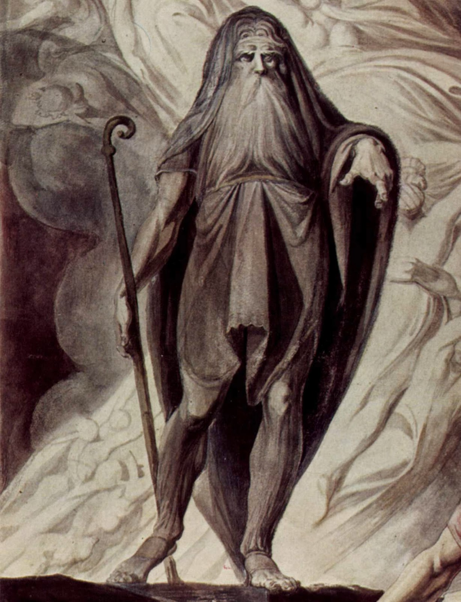
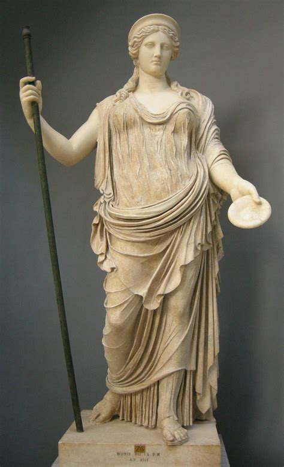
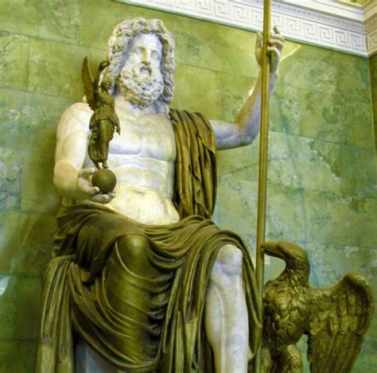
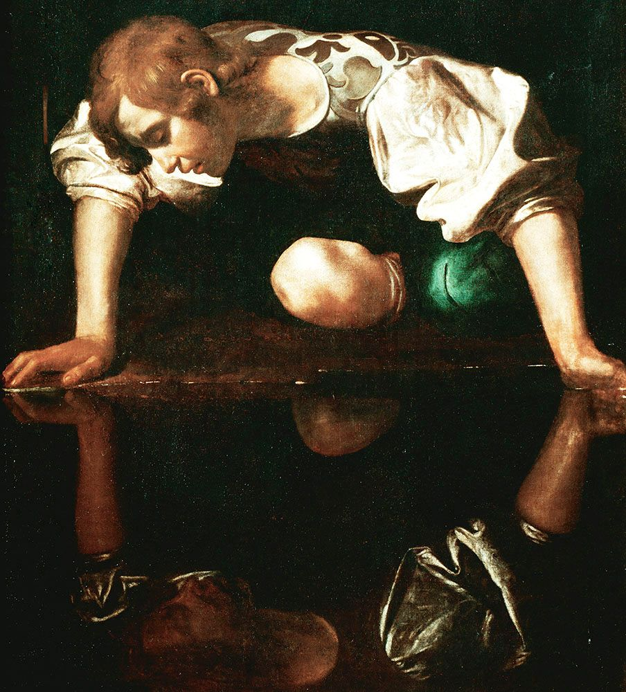
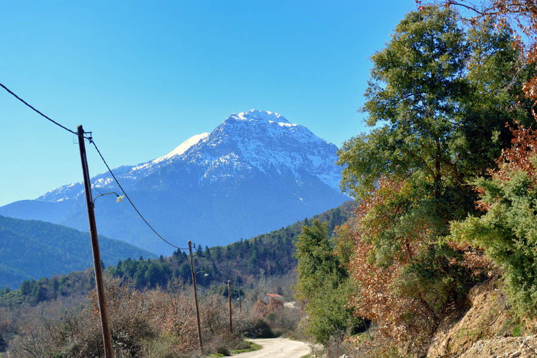
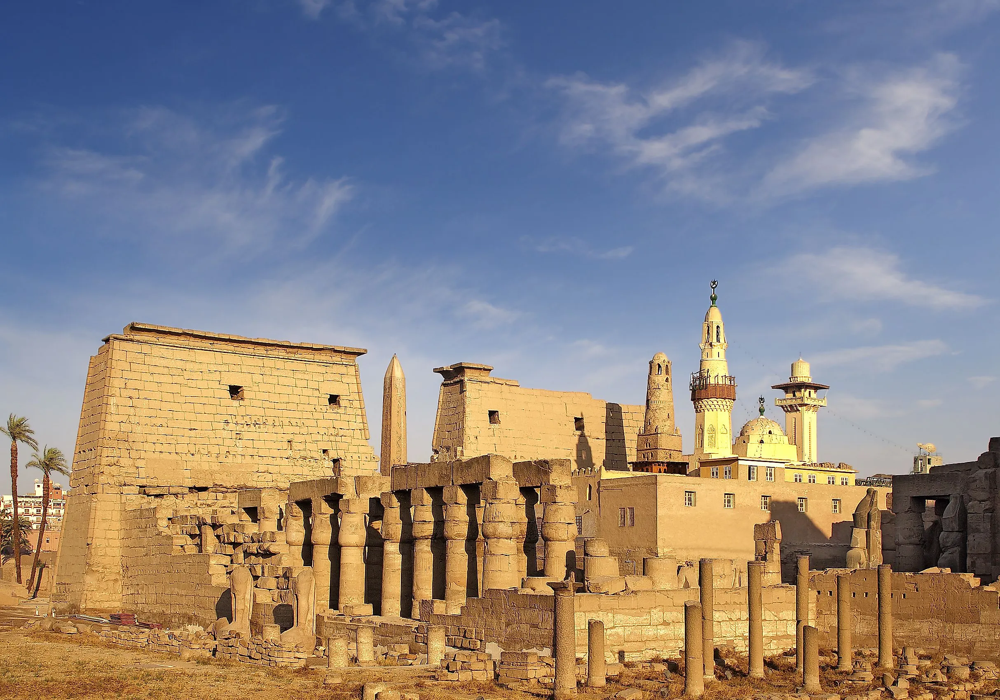
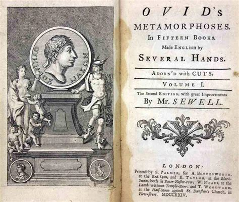
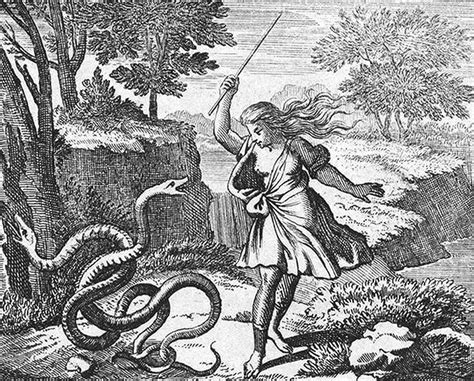
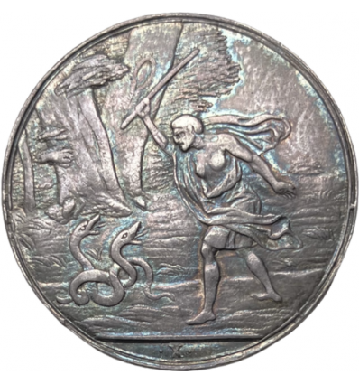
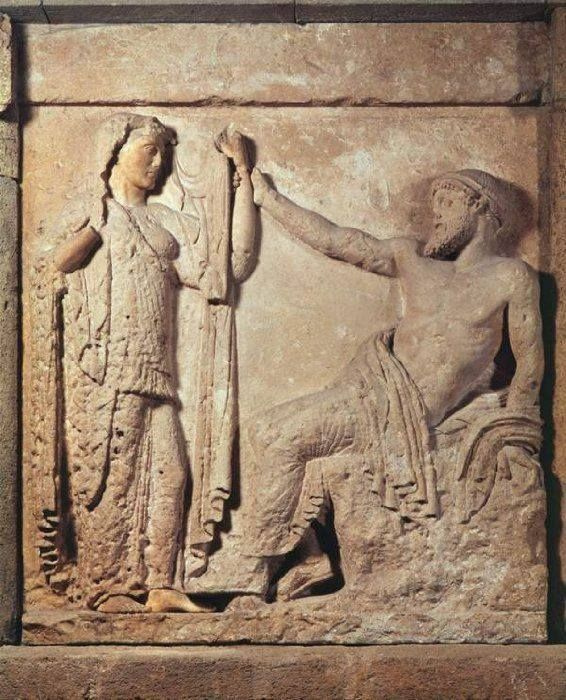

dbo:MythologicalFigure
Tiresias
The central mythological figure of the project. A blind seer of Apollo in Thebes, famous for clairvoyance and for having lived seven years a...
The project explores the character of Tiresias through the most impactful characters, places, events and cultural objects that surround his myth. This analysis starts from Tiresias' Wikipedia page, with the intention of summarizing both the key element of Tiresias' myth and a portion of its impact in later culture.
After a careful reading, 15 items were selected from the Wikipedia page. They are presented in this catalog below.
Each item dossier presents the visual representation, semantic classifications,
authority reconciliation, and linked predicates extracted from tiresias_graph.ttl. The file
will be discussed in the knowledge extraction section.

The central mythological figure of the project. A blind seer of Apollo in Thebes, famous for clairvoyance and for having lived seven years a...

Queen of the Olympian deities and consort of Zeus. In the mythical dispute over whether men or women feel greater pleasure in love, Tiresias...

King of the Olympian gods. Following the celestial dispute over love's pleasure, Zeus compensates Tiresias for the blindness inflicted by He...

The legendary youth of exceptional beauty. In Book III of Ovid's Metamorphoses, his mother Liriope consulted Tiresias regarding the boy's fu...

A mountain located in the north-eastern Peloponnese, Greece. According to classical mythology recorded in Ovid's Metamorphoses, Mount Cyllen...

The historic Greek city in Boeotia. Thebes is the primary civic setting of Tiresias' prophetic activity, counsel to Cadmus and Creon, and th...

Latin narrative poem in fifteen books composed by Ovid, completed c. 8 AD. Book III provides the foundational literary narrative connecting ...

The Athenian tragedy by Sophocles, staged in the 5th century BC. Set in plague-stricken Thebes, King Oedipus summons Tiresias seeking the ca...
Landmark modernist poem by T. S. Eliot published in 1922. In Part III ('The Fire Sermon'), Tiresias serves as the central unifying conscious...

17th-century copperplate engraving by Johann Ulrich Kraus (Augsburg, c. 1690) illustrating Ovid's Metamorphoses. Uniquely depicts Hera desce...

Venetian Baroque oil painting by Pietro della Vecchia (17th century), dramatically capturing the moment Tiresias strikes the serpents with h...
The supernatural gift of divine foresight granted to Tiresias by Zeus in recompense for the blindness inflicted upon him by Hera. In the pro...

The mythological transformation of Tiresias from man to woman on Mount Cyllene after striking two copulating snakes. Lasting seven years, th...

The divine dispute between Zeus and Hera over whether men or women feel greater pleasure in love. Having lived as both sexes, Tiresias judge...